| 日付 | 2025年8月12日（火） - 2025年8月17日（日） | ||||||||||
|---|---|---|---|---|---|---|---|---|---|---|---|
| 山域 | 北アルプス | ||||||||||
| メンバー | 単独 | ||||||||||
| 山行形態 | 5泊6日テント、車中泊 | ||||||||||
| アクセス | 車、バス、電車 | ||||||||||
| ルート (Map) |
|
4日目
4時起床、5時過ぎに出発。
本日は初めての快晴の中の出発だ。
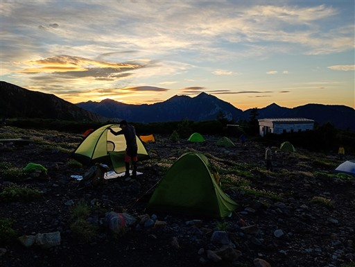
昨日は見えなかった立山方面。
見えているのは龍王岳と獅子岳。
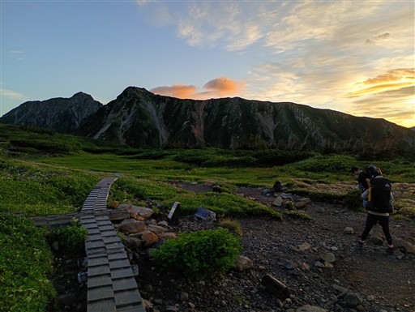
チングルマとハクサンイチゲ。
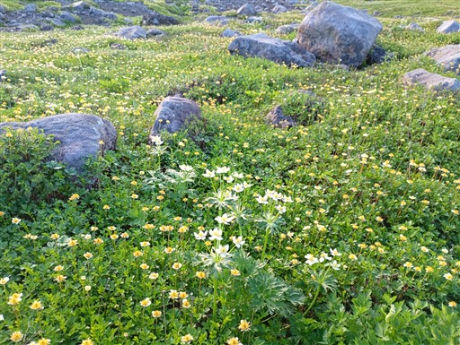
歩き始めてすぐに日の出を迎える。
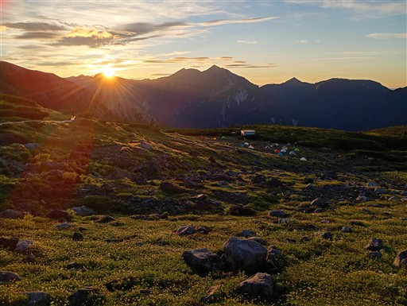
モルゲンロートに染まる草原。
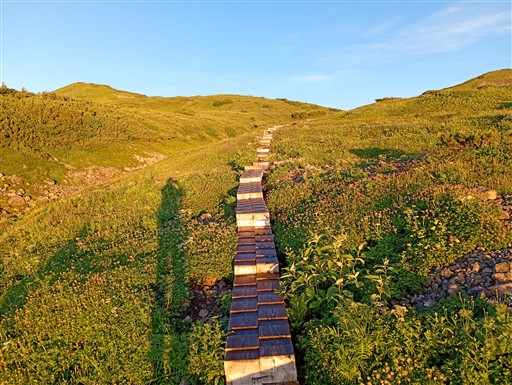
美しい景色を振り返りながら歩いていく。
今回の山行で一番行ってみたかったのがここ五色ヶ原で
快晴に恵まれて本当に良かった。
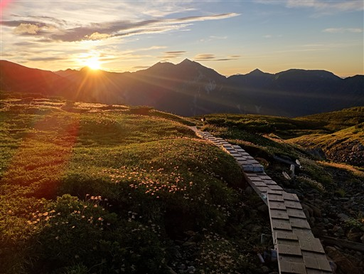
五色ヶ原山荘に戻ってくる。
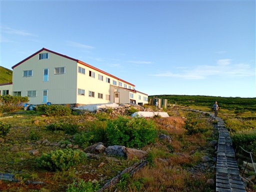
広大な草原。小屋客はもう出払った後なのか、誰もいない。
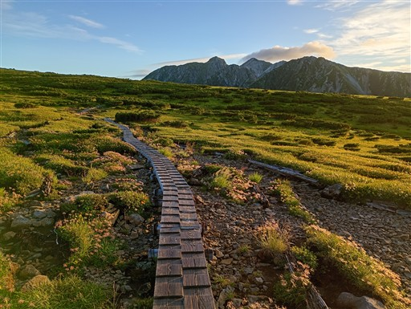
立派な赤牛岳。その左に槍ヶ岳の先端が見えている。
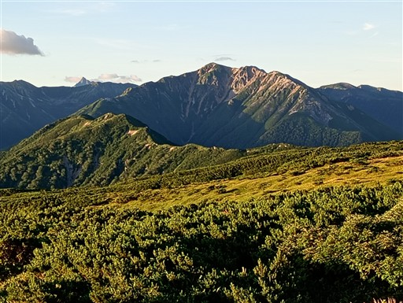
振り返ると遠くに山荘が見える。その背後にある山が昨日登った鳶山だ。
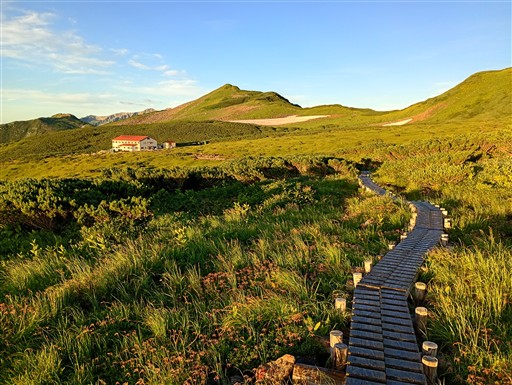
五色ヶ原の端までやってくる。目の前の山が壁のように聳えている。
左から龍王岳、鬼岳、雄山、獅子岳。
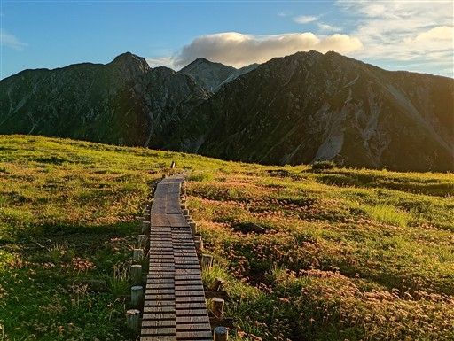
キャンプ場からのショートカット道と合流。ここで木道はお終いだ。
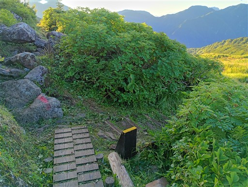
眼下には立山カルデラが広がっている。
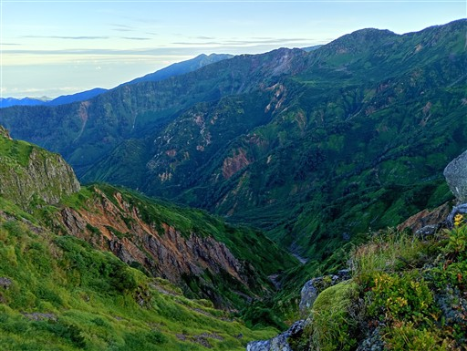
ここまで来て獅子岳の全容がようやく姿を現す。
室堂から五色ヶ原を往復する場合、この山を越えるのがネックになりそうだ。
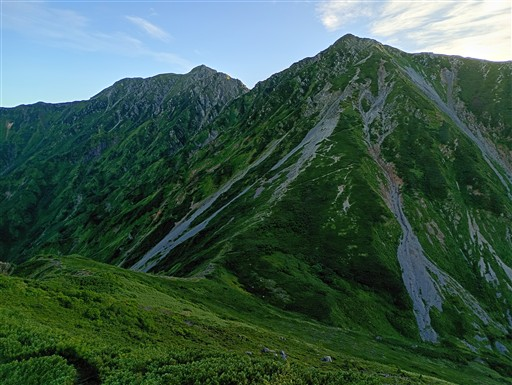
五色ヶ原の先は、立山カルデラに向かって急峻な崖になっている。
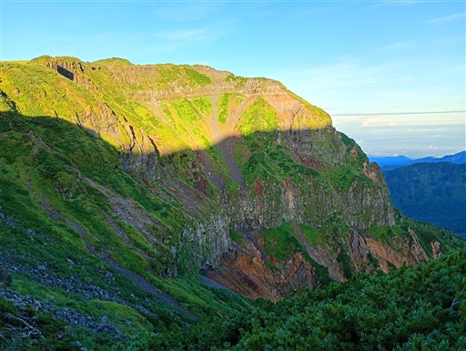
獅子岳の真下までやってきた。
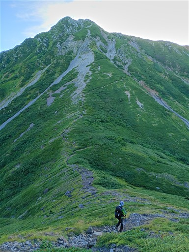
ザラ峠に到着。
古には立山カルデラ～ザラ峠～黒部川～針ノ木峠～大町方面へと続く道が使われていたらしい。
そんな馬鹿な、というようなルートだが、北アルプスを横断する古道があったのだ。
今では立山カルデラ～ザラ峠は廃道になってしまったが、他の部分は登山道として残っており
黒部湖に沈んだ場所には渡し舟がある。
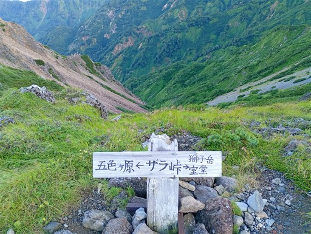
獅子岳の登りに差し掛かる。
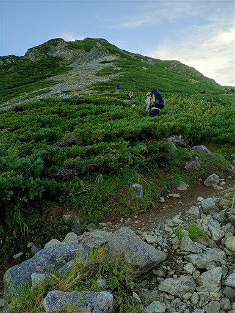
急斜面の登り。途中、梯子も出てくる。
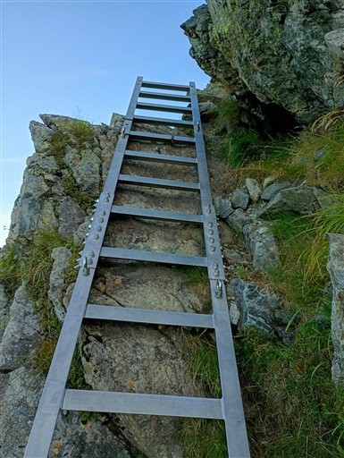
遠く富士山の頭が見えている。
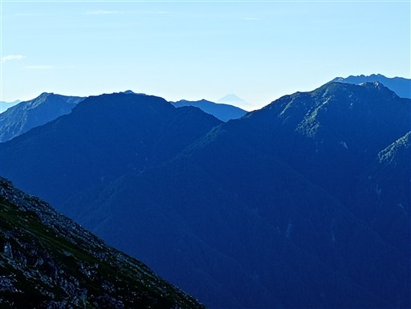
ぐんぐんと高度を上げる。眼下に五色ヶ原が見える。
奥に見えているのは薬師岳だ。
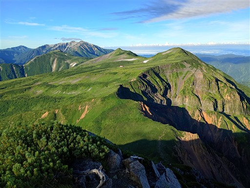
崖の縁につけられた登山道が良く見える。
右手は立山カルデラ内を流れる常願寺川だ。
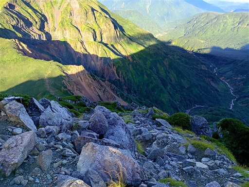
遠く富山市街地を見渡す。
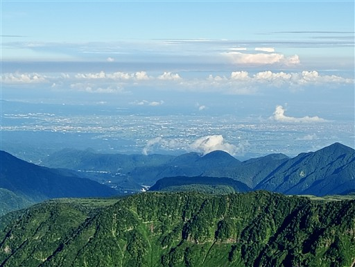
標高を上げると広がる大パノラマ。
右の山は黒部五郎岳、その左は笠ヶ岳だ。
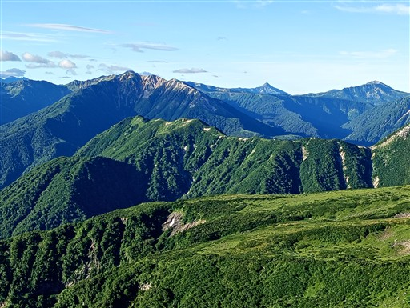
左は針ノ木岳。他はマイナーピークたち。
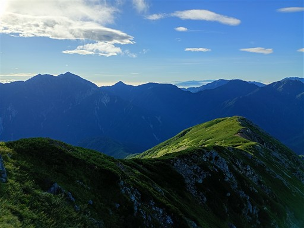
だいぶ傾斜が緩んできた。
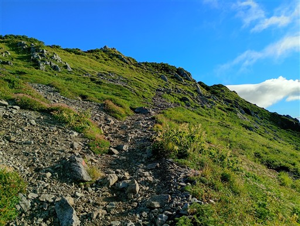
ウサギギクとミヤマダイコンソウ。

トモエシオガマ。
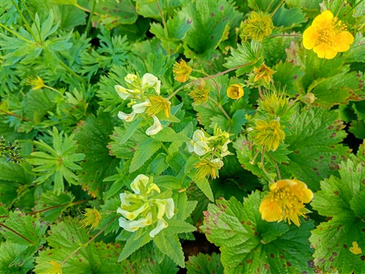
獅子岳山頂に到着。標高2714m。
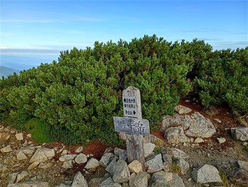
目の前にこれから向かう鬼岳と龍王岳。
右手の立山は雲に覆われ始めている。
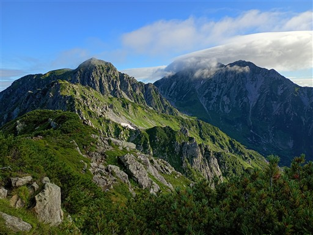
獅子岳を出発。立山方面に向かう。
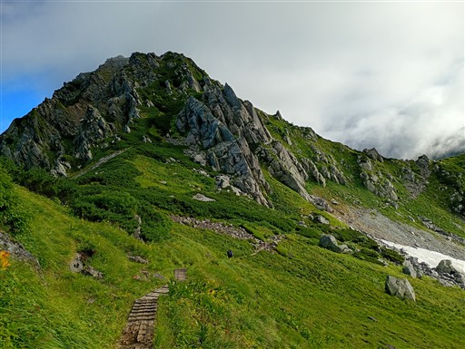
イワツメクサ。
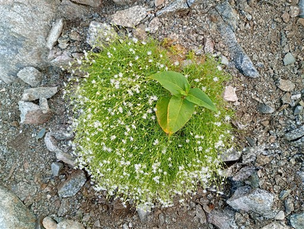
ウメバチソウ。
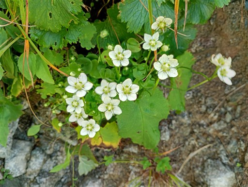
登山道は尾根の東側を巻いてく。
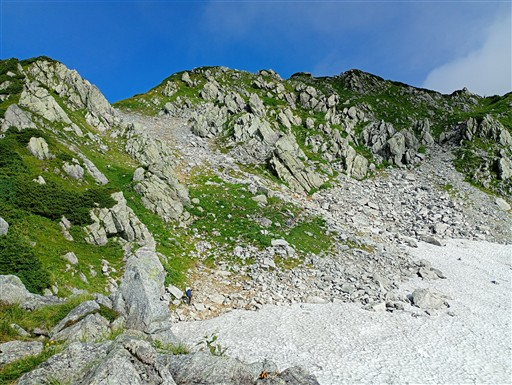
一箇所、雪渓を通過するところがある。傾斜はないので通るのに支障はない。
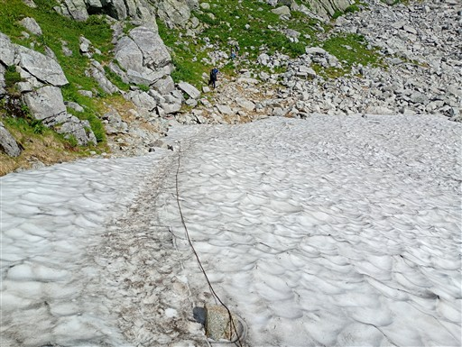
鬼岳は山頂を通過せず、残念ながらここも東側を巻いていく。
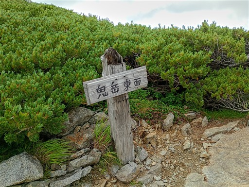
雲はどんどん湧いてきて、ついに雲の中に突入してしまう。
時刻は8時。魔法にかけられたかのような3時間の山歩きだった。
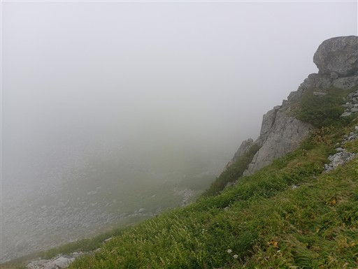
浄土山分岐に到着。龍王岳に向かう道は標識が無かったが、
改めて地図を見たら登山道があるようだったので、少し引き返して登ってみる。
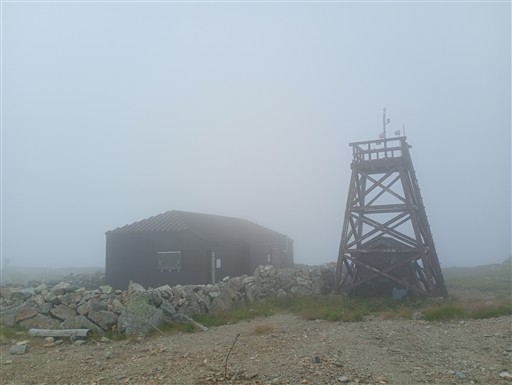
岩が積み重なった龍王岳。
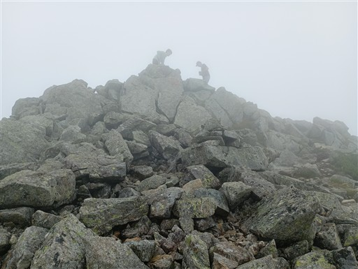
山頂に到着。標高2872m。
以前立山に来たときは、この山への道はなかったはずだ。
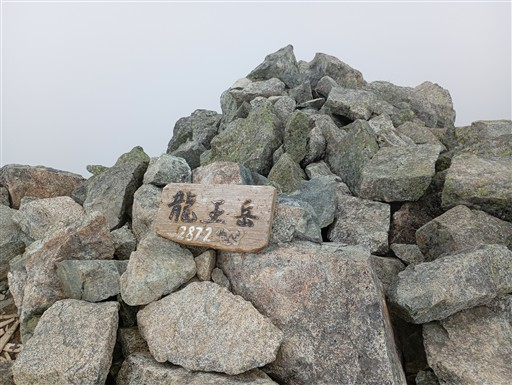
ケルンの上に小石を2つ置いたのは誰だろう？
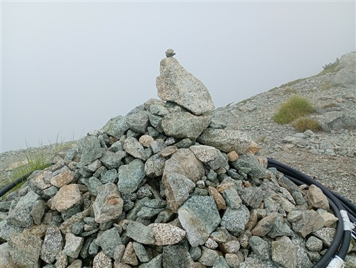
浄土山は18年前に登ったので今回はスキップ。一ノ越に向かって下る。
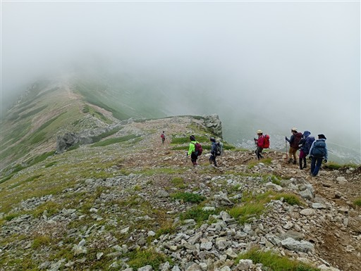
一ノ越山荘に到着。
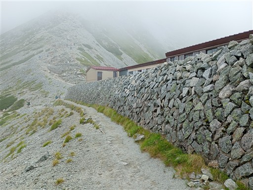
ここは室堂からの道との合流点。人が一気に増える。
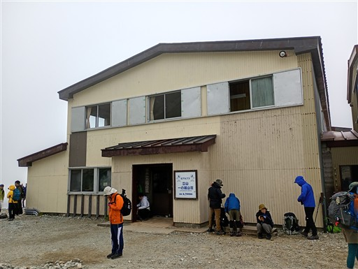
ここから雄山に向かって登り始める。
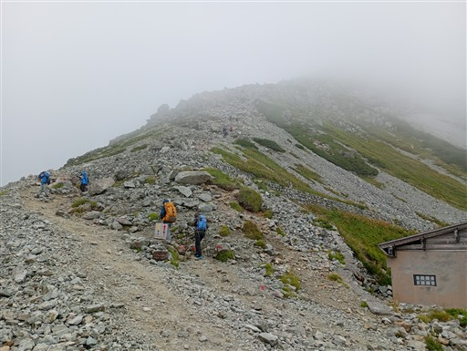
観光客に混ざって登る。急斜面の登山道は結構きつい。
昨日の疲れが残っているのだろうか？
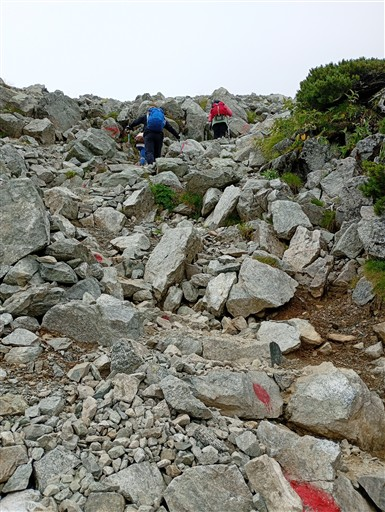
観光客は足の速い人、遅い人、いろいろ。そしてすぐ休む。
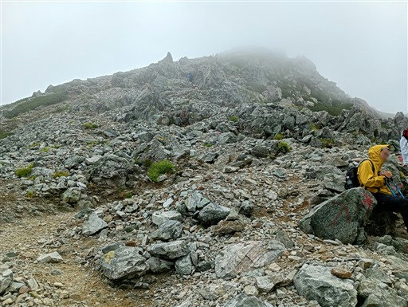
雄山の山頂に到着。一等三角点がある。
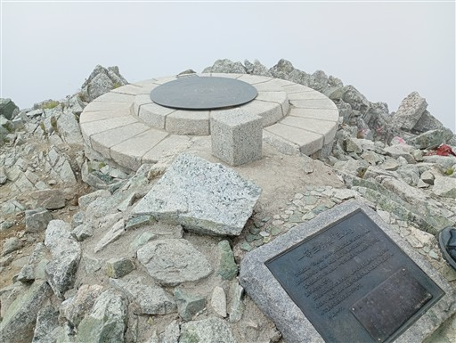
休憩舎の前は多くの観光客で賑わっている。
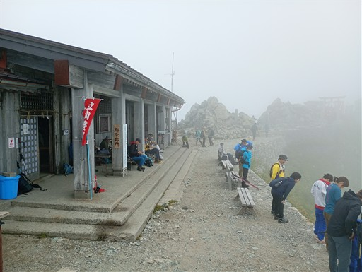
雄山の山頂は鳥居の先に見えているピークだ。
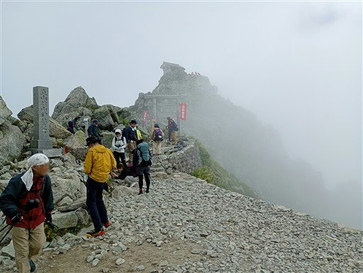
参拝は700円。せっかくここまで来たので行くことにする。
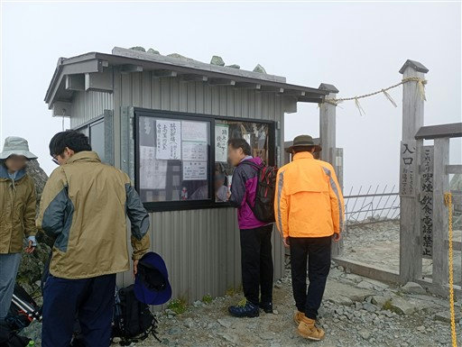
山頂で祈祷をしてくれるらしく、前のグループが終わるまでしばらく待たされる。
順番が来たら雄山山頂へ。標高3003m。
山頂にある雄山神社。以前来たときは10月でもう閉まっていたので、
祈祷を受けるのは今回が初めてだ。
神主さんが「7月はずっと晴れ、8月はずっと雨」と仰っていて
恐らく全員が「本当にそうだよなー」と思ったことだろう。
祈祷を済ませ、昼食をとったら大汝山に向かって出発。
すぐにお隣の大汝山に到着。標高3015mでここが立山最高峰だ。

富士ノ折立。標高2999m。
山頂でライチョウを見る。
獅子岳近辺でも見かけたし、今回の山行ではライチョウをよく見かける。
右手に広がる内蔵助カールは雪が豊富に残っていそうだ。
濃い霧に覆われ、目の前の登山者もすぐ霧の中に消えていく。
ケルンがたくさん並んでいる。
雄山を過ぎると人は少なくなり、富士ノ折立を過ぎるとほとんど誰も歩いていない。
ぐるっと一周歩かないのだろうか？
真砂岳を通過。何も見えない。
続いて別山南峰。ここからは剱岳の展望が良いのだが、もちろん何も見えない。
行く意味はあまりないが、ザックを置いて別山北峰を往復する。
別山北峰。標高2880mで南峰よりこちらの方が高い。
眼下に少しだけ剱沢が見える。
分岐点から剱沢に向かって下っていく。
ここからは未知のルートだ。
ものすごく急な登山道。かなり強引につけられた道だ。
歩いている人は少ない。室堂から直接剱沢に向かう場合はこの道を通らない。
剱岳に向かう人は立山には立ち寄らないのか…
眼下に剱沢キャンプ場が見えてきた。
雨が降ってきたので管理事務所に駆け込む。
手続きを済ませた後、雨が止むのを待ちたいが、この建物には軒がない…
仕方なく、カッパを着て設営を済ませる。
いろいろ濡れてしまい気分が落ち込んだので、テントに入ってしばらく休憩。
しばらくすると青空も見えてきて、剱岳も姿を現し始める。
剱岳を眺めるため、剱沢小屋まで行ってみる。
「岩と雪の殿堂」の標識。

多くの登山者が小屋の外に出て剱岳を眺めている。
間近から望む剱岳。
見えているのは前剱で、剱岳山頂は雲の中だ。
キャンプ場に戻ってくる。一瞬雲が消えて、稜線が見渡せる。
左端が別山北峰辺りだろうか？
それにしても巨大なキャンプ場だ。テントの数は多いが、それを上回る広さだ。
その後も雨は降ったり止んだり。
見える景色はまるで中国の水墨画のようだ。
夜中は、写真にはうまく撮れなかったが満天の星空。
周囲に光は全くなく、月もなく、天の川が余裕で見えるほどの星空だった。